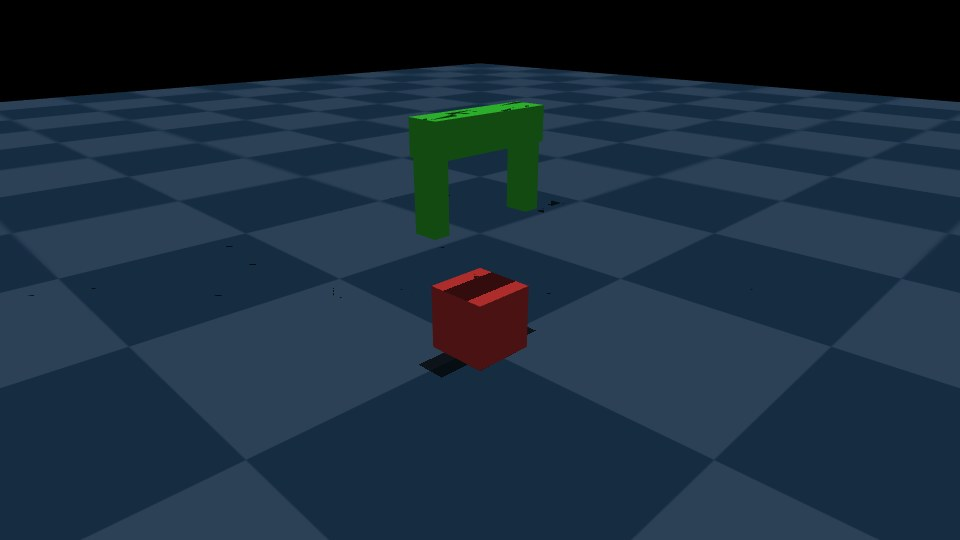

This project explores how foundation models can close the loop around a physics simulator. The scene is a parallel gripper and a box in MuJoCo. The gripper runs a fixed sequence (align, descend, grasp, lift); whether the lift succeeds depends on physical parameters such as grip force and box friction.
The first trial starts with a deliberately weak grip and very low friction, so the box slips. A vision-language model (Qwen2-VL-2B) looks at the rendered frame and explains what went wrong. An LLM planner (Qwen2.5-1.5B) turns that critique, plus an optional command from a human supervisor, into corrected parameters as structured JSON. The simulator applies them on the fly, runs a second trial, and the VLM checks the result.